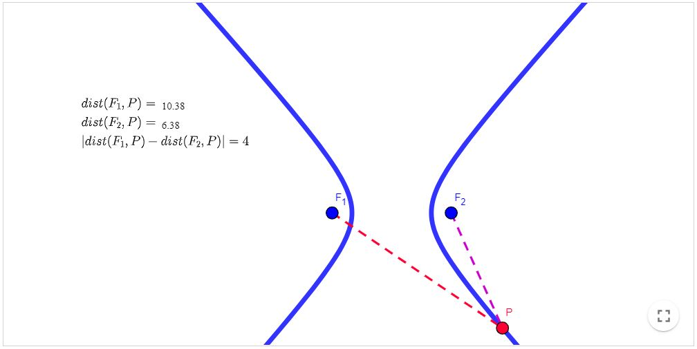
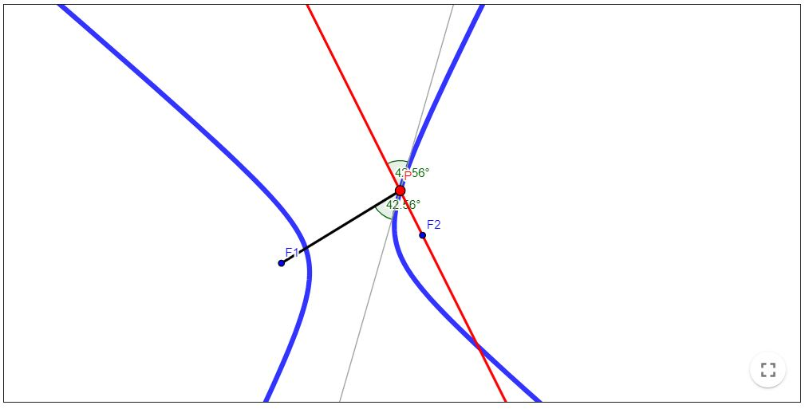
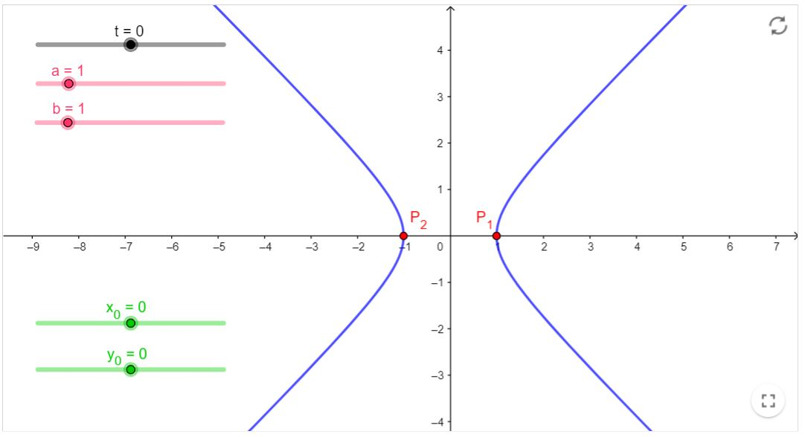
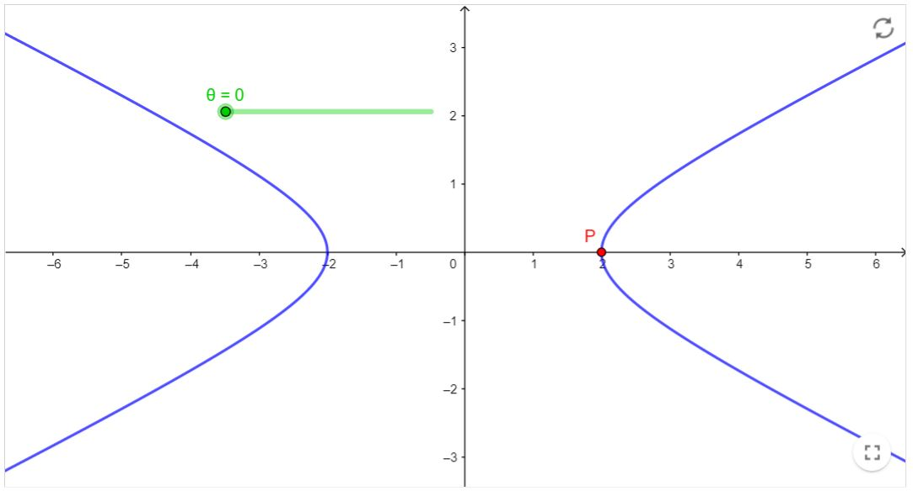

Revisão de Geometria Analítica
Hipérbole
Definição:
Conjunto dos pontos $P$ de um plano cujas distâncias a dois pontos fixos $F_{1}$ e $F_{2}$ desse plano têm diferença (em valor absoluto) constante $2a$.
Propriedade de reflexão da Hipérbole
Seja $r$ a reta tangente no ponto $P$ de uma hipérbole de focos $F_{1}$ e $F_{2}$. Então os ângulos $\alpha$ e $\beta$ formados pela reta $r$ e os raios focais são iguais.
Em outras palavras, o resultado acima diz que se uma partícula sai de $F_{1}$ em direção a $\mathrm{P}$, irá refletir de forma que o prolongamento da reflexão irá passar sobre o foco $F_{2}$.
Equações paramétricas da Hipérbole
Uma hipérbole descrita pela equação reduzida $\frac{\left(x-x_{0}\right)^{2}}{a^{2}}-\frac{\left(y-y_{0}\right)^{2}}{b^{2}}=1$ pode ser descrita através das seguintes equações paramétricas:
$x=x_{0} \pm a \cosh (t)$ $y=y_{0}+b \operatorname{senh}(t)$ onde $t \in \mathbb{R}$.
A parte positiva de $x$ parametriza a parte da direita da hipérbole. A parte negativa parametriza a parte esquerda.
A construção em (Em recursos computacionais) ilustra esta forma de escrever a hipérbole (varie os valores de $t$ ).
Outra parametrização da Hipérbole
Uma hipérbole descrita pela equação reduzida $\frac{\left(x-x_{0}\right)^{2}}{a^{2}}-\frac{\left(y-y_{0}\right)^{2}}{b^{2}}=1$ também pode ser parametrizada da seguinte forma:
$x=x_{0}+a \sec (\theta)$
$y=y_{0}+b \tan (\theta)$
Onde $\theta \in[0,2 \pi]$. Abaixo você pode variar o parâmetro $\theta$ e ver como o ponto $P$ percorre a hipérbole.
(Em recursos computacionais)
Recursos computacionais
Hipérbole - Definição
Atividade: Mova o ponto ao longo da Hipérbole e verifique o que ocorre com os valores das distâncias de até os focos, bem como o que ocorre com a diferença (em módulo) destas distâncias.
Livro Geogebra

Hipérbole - Propriedade de reflexão
Livro Geogebra

Elipse - Equações Paramétricas I
Livro Geogebra

(voltar ao texto)
Elipse - Equações Paramétricas II
Livro Geogebra
